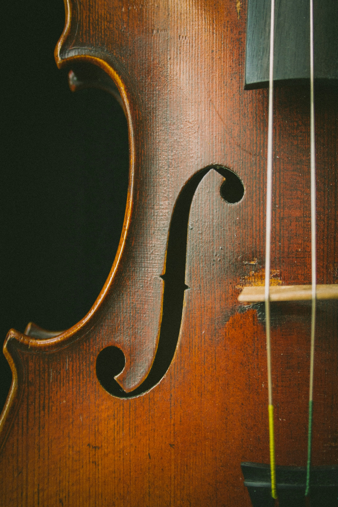
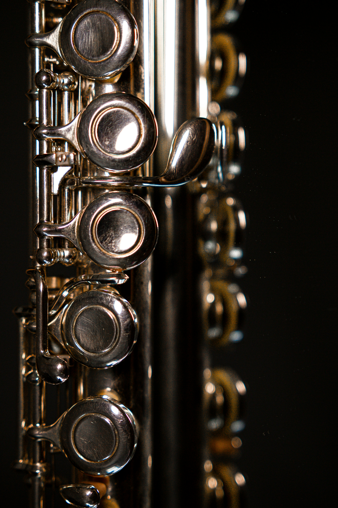
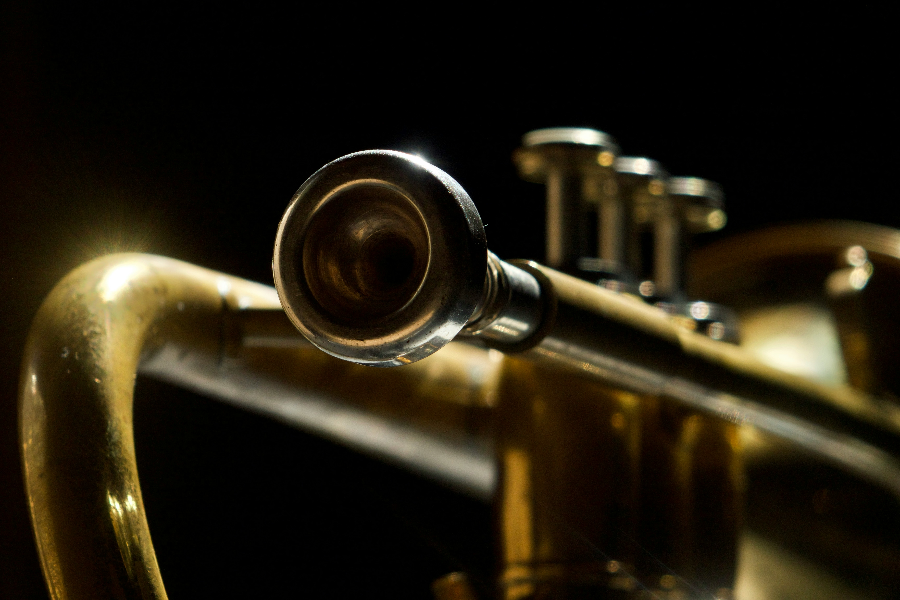
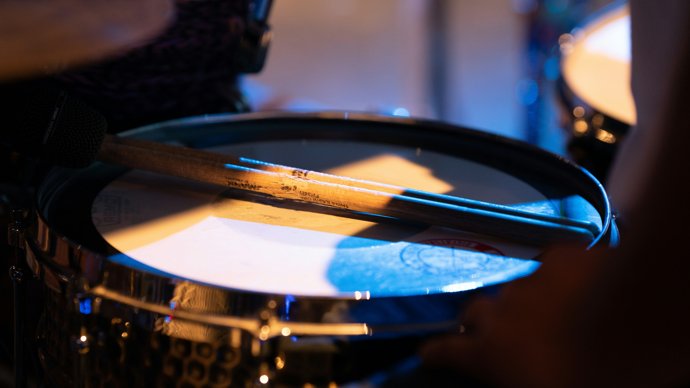

Strings
The string family includes instruments such as the violin, viola, cello, and double bass.
Explore StringsEXPLORE • LEARN • CREATE
Explore the four major sections of the orchestra and learn about the instruments that work together to create an orchestral sound.
Explore the OrchestraLog in to continue exploring the orchestra.
THE FOUR FAMILIES
Select an orchestra section to discover the instruments that belong to that family.

The string family includes instruments such as the violin, viola, cello, and double bass.
Explore Strings
The woodwind family includes instruments such as the flute, oboe, clarinet, and bassoon.
Explore Woodwinds
The brass family includes instruments such as the trumpet, French horn, trombone, and tuba.
Explore Brass
The percussion family includes instruments such as timpani, snare drum, bass drum, and cymbals.
Explore PercussionABOUT THE PROJECT
An orchestra is made up of multiple instrument families that work together to create a wide range of sounds, textures, melodies, harmonies, and rhythms.
Understanding the role of each instrument can help musicians and composers make better decisions when arranging and producing music.
Learn More About the Orchestra →